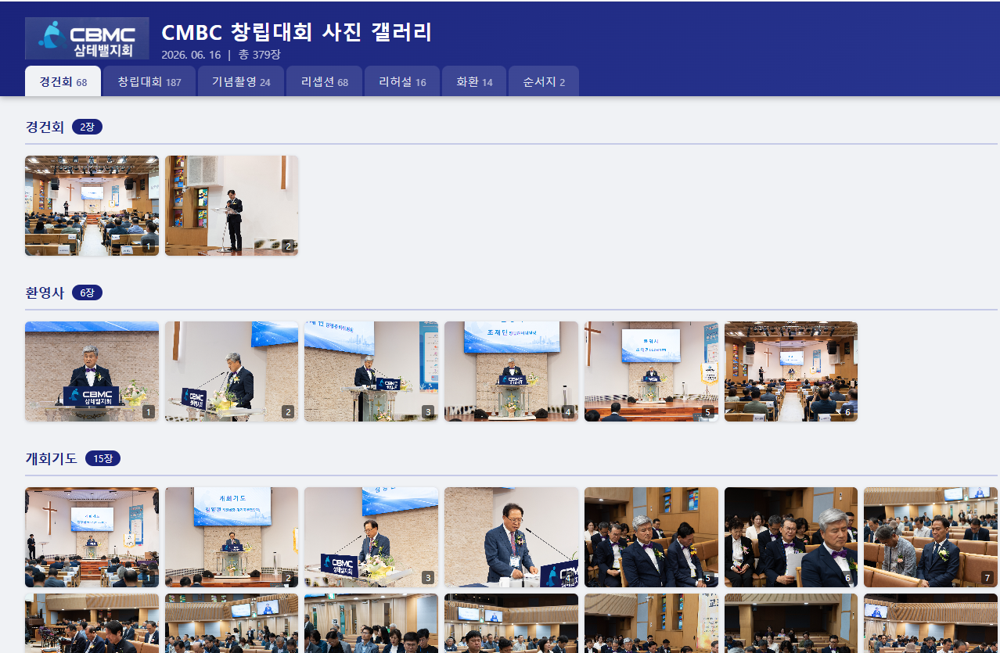

교육
나사렛 성결교단 목회자 세미나
AI를 통한 교회 업무 자동화 교육
교단 목회자 세미나에서 진행한 실무 교육 자료입니다.
설교 준비부터 공문서 작성까지, 교회 현장에서 바로 쓸 수 있는 AI 활용법을 단계별로 구성했습니다.
- ChatGPT 기반 설교·주보 초안 작성
- 반복 업무 자동화 (공문서·이메일·보고서)
- 전국 목회자 세미나 강의 진행
- 2025. 7. 17 — 서울 지방회 예배 PPT 슬라이드 제작 강의
- 2025. 9. 16 — 경기남 지방회 예배 PPT 슬라이드 제작 강의
- 2026. 6. 22–24 — 나사렛 성결교단 목회자 세미나 AI 교육
- 2026. 7. 7 — 일산 나사렛교회 목회자 설교 준비를 위한 AI 활용법 강의 (예정)
출판 지원
나사렛성결회 총회교육국
소그룹 성결교육 시리즈
교재 출판 지원 및 배너 디자인
『생명과 믿음의 뿌리: 창세기편』,
『하나님의 거룩함 안으로: 출애굽기편』
교재의 편집·홍보 업무를 지원했습니다.
- 교재 내용 정리 초안 제작
- 교단 홍보용 와이드 배너 직접 디자인
- PDF 배포 방식 기획 지원
- 레위기편 작업 진행 중

대한기독교나사렛성결회 교육국
2026 여름성경학교 교재 출판 지원
2026 여름성경학교 "BIBLE TOUR — His Story" Leader's Guide 초안 제작을 지원했습니다.
- 교재 편집 보조
- 교육용 이미지 생성 및 영상 제작 지원

웹 · 디자인
HANROOT 2026 COLLECTION
종이 카탈로그 제작을 위한 디지털 시안
실제 인쇄 전, 레이아웃·색상·텍스트를 빠르게 시안화한 디지털 샘플입니다.
현재 경비복 업체 카탈로그를 제작 중입니다.
- 레이아웃·카피 초안 작업
- 인쇄 규격에 맞춘 디지털 프리뷰
- 수정 요청 즉시 반영 가능한 구조
BEANS — 한국엘리스테이블
커스텀 쇼핑몰 구축 샘플
디자인부터 기능 구현까지 빠르게 완성한 쇼핑몰 샘플입니다.
- 상품 목록 · 상세 · 장바구니 · 결제 흐름 구현
- 회원 · 마이페이지 · 구독 기능 포함
대한기독교나사렛성결회 교육국
BIBLE TOUR 2026 미션투어 캠프 운영 페이지
2026 여름성경학교 미션투어 프로그램 운영 페이지를 제작했습니다.
손공예 활동 안내, 성경 말씀 연계 메시지, 단계별 제작 순서를 담았습니다.
- 빛나는 키링 · 색모래 캔들 · 감정 액자 만들기 프로그램 구성
- 각 활동별 성경 구절 · 준비물 · 제작 순서 · 적용 질문 포함
헤븐아이 여름캠프
2026 헤븐아이 여름캠프 운영 페이지
소규모 교회를 지원하는 여름성경학교 캠프 운영 페이지를 제작했습니다.
"사랑으로 징검다리!" 주제 아래 유치부·유초등부 대상 일정과 프로그램을 안내합니다.
- 캠프 준비 · 시간표 · 숙소 배정 · 프로그램 안내 구성
- 부서별 일정 및 부모·교사 공지사항 포함
- 2026. 8. 3 – 5 캠프 운영
영상 · 사진
CBMC FIDES CHOIR
제2회 정기 연주회 공연 영상 제작
합창단 정기 연주회 전체 공연 영상을 제작했습니다.
공연에 사용된 가사 자막 슬라이드(PPT 배경)도 함께 제작했습니다.
- 공연 전체 영상 촬영 및 편집
- 공연 가사 자막 슬라이드 제작 (PPT 배경 디자인)
한국 CBMC 삼테밸지회
창립대회 스탭 촬영 및 전자 앨범 제작
창립대회 전체 행사를 스탭으로 참여해 촬영했습니다.
촬영본을 카테고리별로 분류한 전자 앨범으로 제작·배포했습니다.
- 경건회·창립대회·기념촬영·리셉션 등 전 순서 현장 촬영
- 총 379장 정리 및 카테고리별 전자 앨범 구성
- 온라인 공유 가능한 갤러리 형태로 제작

유튜브 채널 운영